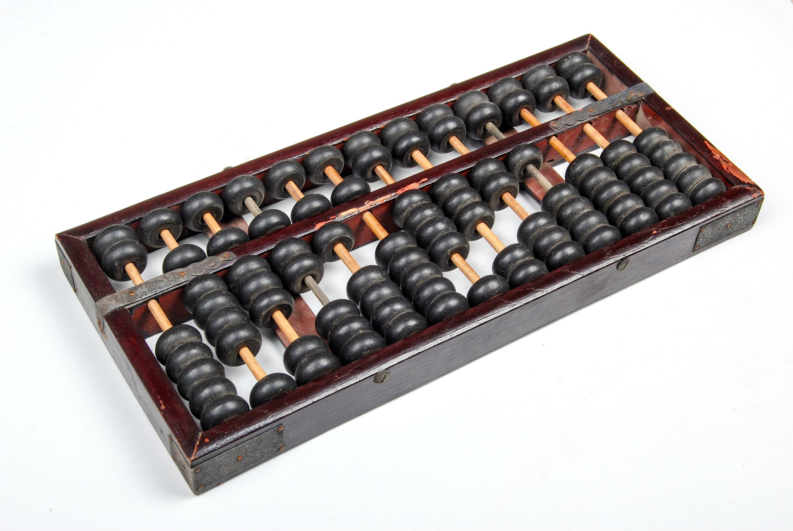

DATASCI 350 - Data Science Computing
Lecture 02: Computational Literacy
Recap and lecture overview 📚
Course information
- Three themes: reliability, reproducibility, and robustness
- What we cover:
- Command line and shell scripting
- Version control with Git and GitHub
- Reproducible reports with Quarto
- AI-assisted programming
- Cloud computing
- Getting data from the web
- Scaling and parallel computing
- Containers with Docker
- Grading:
- 50% assignments (10)
- 30% in-class quizzes (5)
- 20% final project
- AI is allowed in all assignments and quizzes
- Discuss with classmates, but submit your own work
- Late submissions: 10% off per day
- More details on the course repository
Questions about the course organisation?
Software installation
Tip
- Our installation tutorials explain each step
- You can also ask Student Tech Support
- If you have any questions, please let me know
Learning objectives
By the end of this lecture, you will be able to:
- Learn how computers work from the ground up, starting with binary code
- Get familiar with other key computer encodings like hexadecimal, ASCII, and Unicode
- Learn about the pioneers of computing and the development of Assembly language
- Understand the difference between low-level and high-level programming languages and when to use each
Let’s get started! 🚀 💻
Brief history of computing
The first computers
- Historically, a computer was a person who makes calculations, especially with a calculating machine
- To do calculations we use numbers. How to represent them?
- Fingers
- Pebbles
- Strings (Inca Khipu)
- Abacus

Four-species mechanical calculators
The first mechanical calculator capable of performing all four basic arithmetic operations (addition, subtraction, multiplication, and division)
Invented by Gottfried Wilhelm Leibniz in 1694
If you took a statistics course before the late 1970s, you likely used this type of mechanical calculator for your computations
Silicon-based computers
The 1970s marked the transition from mechanical to electronic:
- Transistors act as switches for electronic signals
- Integrated circuits combine multiple transistors on a single chip
- Microprocessors are integrated circuits that contain the functions of a computer’s central processing unit (CPU)
- They follow the Von Neumann architecture
Von Neumann architecture
- The Von Neumann architecture keeps programs and data in the same memory
- Five parts: memory, control unit (directs the others), arithmetic logic unit (does the maths), input, and output
- Instructions travel from slow storage (a hard disk) to fast RAM, then to the CPU
- The CPU repeats one cycle: fetch, decode, execute
- Proposed in 1945, when programs were still seen as part of the machine
- Almost every computer you use today works this way
Von Neumann architecture
- Advantages:
- One memory for everything, so the design stays simple and cheap
- Programs can be loaded, changed, and replaced like any other data
- Disadvantages:
- The Von Neumann bottleneck: one bus (the wires linking the CPU to memory) carries both instructions and data, so only one can move at a time
- The CPU sits idle while it waits for memory. Modern chips hide this with caches
- The Harvard architecture splits the two memories. Most CPUs today use a mix of both
Data representation
Computers run on 0s and 1s
- Computers store everything as 0s and 1s
- A transistor is a switch: high voltage is 1, low voltage is 0
- They are tiny and cheap. A modern chip holds ~200 billion transistors and performs billions of operations per second!
- Two states are the simplest thing a switch can do
- So how do we get to text, images, and video?
- By abstraction, keeping only the detail we need
- A colour becomes three numbers. A number becomes 0s and 1s
- Each layer hides the one below

Converting coins to dollars
- We can convert between number systems by translating a value from one system to the other
- For example, the coins on the left represent the same value as $0.87
- Using pictures is clunky. Let’s make a new representation system for coins
Converting coins to dollars
- To represent coins, we will make a number with four digits
- The first represents quarters, the second dimes, the third nickels, and the fourth pennies
- c3102 =
- 3 x $0.25 + 1 x $0.10 + 0 x $0.05 + 2 x $0.01 =
- $0.87
Converting dollars to coins
Quick questions!
Remember, the four digits are quarters, dimes, nickels, and pennies
What is
c1112in dollars?What is $0.61 in coin representation? Use as few coins as you can
Number systems – binary
- Back to computers! 💻
- Binary writes numbers with only 0s and 1s
- Coins counted 1s, 5s, 10s, and 25s. Binary counts 1s, 2s, 4s, and 8s
- Why those? They are powers of 2
- One digit is a bit: 101 has three bits
- Eight bits are a byte: 10101010
- Counting up:
- 0 is zero
- 1 is one
- 10 is two
- 100 is four
- 1000 is eight… and so on!
Quick question!
- Question: what is the binary representation of the decimal number 3?
- 101
- 11
- 111
- 010
Your turn!
Practice exercise 01:
How would you write 5 in binary?
And 12?
How many bits do you need to write 11?
What is the largest number you can write with 4 bits?
Convert binary to decimal
To convert a binary number to decimal, just add each power of 2 that is represented by a 1
- For example, 00011000 = 16 + 8 = 24
| 128 | 64 | 32 | 16 | 8 | 4 | 2 | 1 |
|---|---|---|---|---|---|---|---|
| 0 | 0 | 0 | 1 | 1 | 0 | 0 | 0 |
- Another example: 10010001 = 128 + 16 + 1 = 145
| 128 | 64 | 32 | 16 | 8 | 4 | 2 | 1 |
|---|---|---|---|---|---|---|---|
| 1 | 0 | 0 | 1 | 0 | 0 | 0 | 1 |
So far, so good? 😃
Binary and abstraction
Binary and abstraction
- Now that we can represent numbers using binary, we can represent everything computers store using binary! 🤓
- We just need to use abstraction to interpret bits or numbers in particular ways
- Let’s consider colours, images, and text
Images as collections of colours
- How can we convert an image to numbers?
- First, we need to convert the image into a grid of colours, where each dot of colour has a distinct hue
- A dot of colour in this context is called a pixel
- Now we just need to represent a single colour (a pixel) as a number
Images as collections of colours
RGB colour model
- The RGB colour model describes a pixel with three numbers from 0 to 255
- One for red, one for green, one for blue
- 0 means none of that colour, 255 means as much as possible
- White is (255, 255, 255), black is (0, 0, 0)
- Try different colours here
- In binary, each number needs 8 digits, so one pixel takes 24. That gets long fast

Number systems – Hexadecimal
What is hexadecimal?
- When we represent values with multiple bytes, it is hard to distinguish where numbers begin and end
- Hexadecimal is a number system with 16 digits: 0123456789ABCDEF
- It is used to represent binary numbers in a more compact way
- Each hex digit corresponds to 4 binary bits, making it a shorthand for binary:
- 0000 = 0
- 0001 = 1
- 0010 = 2
- …
- 1110 = E
- 1111 = F
Binary to hex conversion
- Convert binary to hex by grouping into blocks of four bits
- Example: Binary
1001 1110 0000 1010converts to Hex9E0A(9 + 14 + 0 + 10)
Practice Exercise 02:
Convert the decimal number 13 to binary
Convert the decimal number 13 to hexadecimal
Hexadecimal and HTML
Hex and RGB
HTML uses hexadecimal to represent colours
Six-digit hex numbers specify colours:
- FFFFFF = White
- 000000 = Black
Each pair of digits represents a colour component (RGB)
16 * 16 = 256, so two hex digits can represent values from 0 to 255
This gives a total of 256 intensity levels for each primary colour
When you combine the three channels, you get a possible colour palette of \(256^3\) or about 16.7 million colours… but described in a compact way using hex
Represent text as individual characters
Characters and glyphs
- Next, how do we represent text?
- First, we break it down into smaller parts, like with images. In this case, we break text down into individual characters
- A character is the smallest component of text, like A, B, or /
- A glyph is the graphical representation of a character
- The display of glyphs is typically handled by GUI (Graphical User Interface) toolkits or font renderers
Represent text as individual characters
Lookup tables
- For example, the text “Hello World” becomes
H, e, l, l, o, space, W, o, r, l, d - Unlike colours, characters do not have a logical connection to numbers
- To represent characters as numbers, we use a lookup table called ASCII
- ASCII stands for American Standard Code for Information Interchange
- As long as every computer uses the same lookup table, computers can always translate a set of numbers into the same set of characters
ASCII is nothing but a simple lookup table
Yes, really!
- ASCII maps the numbers 0 to 127 to characters
- That range needs 7 bits, so a character fits in one byte
Ais 65,ais 97, and a space is 32- The first 32 entries are not letters at all. They are control codes, like tab and newline
- Explore the whole table here
ASCII is nothing but a simple lookup table
Can you guess the binary? Hint: split each byte in half!
“Hello World” =
01001000 01100101 01101100 01101100 01101111 00100000 01010111 01101111 01110010 01101100 01100100
Your turn!
Practice Exercise 03
- Translate the following binary into ASCII text:
- Work in hexadecimal or in decimal
01011001 01100001 01111001
ASCII limitations
- 128 slots go a long way, but not far enough
- No accents, so “café” is out of reach. No Greek, Arabic, or Chinese either
Questions? 🤔
The genesis of programming languages 🌟 🔡 🐍
The genesis of programming
Zuse’s computers
- Konrad Zuse was a German engineer and computer pioneer
- He created the first programmable computer, the Z3, in 1941
- The Z3 was the first computer to use binary arithmetic and read binary instructions from punch tape
- Example: Z4 had 512 bytes of memory
- Zuse also created the first high-level programming language, Plankalkül (“calculus for planning”)
What is Assembly language?

- Assembly language is a low-level programming language that allows writing machine code in human-readable text
- Each instruction corresponds to a single machine code instruction
- The first assemblers were human!
- Programmers wrote assembly code, which secretaries transcribed to binary for machine processing
Some curious facts about Assembly!
The Apollo 11 mission to the moon was programmed in assembly language
The code is available here: https://github.com/chrislgarry/Apollo-11 (good luck reading it! 😅)
One of the files is the
BURN_BABY_BURN--MASTER_IGNITION_ROUTINE.agc🔥 🚀But if Assembly is so fast and efficient, why don’t we use it all the time?
Low-level vs high-level languages
- Low-level languages are closer to machine code and are harder to read and write
- High-level languages abstract from hardware details and are portable across different systems
- Compiled Languages: Convert code to binary instructions before execution (e.g.,
C++,Fortran,Go) - Interpreted Languages: Run inside a program that interprets and executes commands immediately (e.g.,
R,Python)

Low-level vs high-level languages
Code that is worth a thousand words
- “Hello, World!” in machine code (hex):
48 65 6C 6C 6F 2C 20 57 6F 72 6C 64 21- “Hello, World!” in Assembly (x86-64 Assembly for Linux)
section .data
message db 'Hello, World!', 10 ; 10 is ASCII for newline
msglen equ $ - message ; length, worked out by the assembler
section .text
global _start
_start:
mov rax, 1 ; system call number for write
mov rdi, 1 ; file descriptor 1 is stdout
mov rsi, message ; address of the string
mov rdx, msglen ; how many bytes to write
syscall ; hand over to the kernel
mov rax, 60 ; system call number for exit
xor rdi, rdi ; exit status 0
syscall ; hand over to the kernel- “Hello, World!” in Python:
- It’s easy to see why high-level languages are more popular! 😅
Question: Is Natural Language Programming the Future of High-Level Languages? 🤖
Summary 💡
Summary
- A computer was once a person. Then came the abacus, Leibniz’s calculator, and the transistor
- The Von Neumann architecture keeps programs and data in one memory. Almost every machine still works this way
- Everything is stored as 0s and 1s. Binary counts in powers of 2, and hexadecimal packs four bits into one digit
- ASCII gives 128 characters a number each. Unicode stretches that to about 1.1 million, emoji included
- Konrad Zuse built the first programmable digital computers, and assembly gave machine code readable names
- High-level languages hide all of it. Compilers translate ahead of time, interpreters as they go
Next class
- We will learn about the command line and shell scripting in the terminal
- Please have your WSL or iTerm2 installed, and we will start coding!
- If you have VS Code, that’s even better! 😉
- Please check the installation tutorials for more information, and let me know if you have any questions 😃
- Assignment 01 is already online. Please check it out! It is due next Thursday 😉
Thank you very much and see you next class! 😊 🙏
Solution - Coin conversions
What is
c1112in dollars?$0.42 = 1 x $0.25 + 1 x $0.10 + 1 x $0.05 + 2 x $0.01
What is $0.61 in coin representation?
c2101 = 2 x $0.25 + 1 x $0.10 + 0 x $0.05 + 1 x $0.01
Solution - Practice exercise 01
How would you write 5 in binary?
101, because \(4 + 1 = 5\)How would you write 12 in binary?
1100, because \(8 + 4 = 12\)How many bits do you need to write 11?
Four. \(11 = 8 + 2 + 1\), so
1011What is the largest number you can write with 4 bits?
1111, which is \(8 + 4 + 2 + 1 = 15\)In general, \(n\) bits reach \(2^n - 1\). This is why a byte stops at 255
Solution - Practice exercise 02
- Decimal 13 is
1101in binary.
- Break it down: \(13 = (1 \times 2^3) + (1 \times 2^2) + (0 \times 2^1) + (1 \times 2^0)\).
- Binary 1101 is
Din hexadecimal.
- Group the binary into blocks of four:
1101. - Convert each block to hex:
1101(binary) =D(hex). - Let’s take a closer look at how to convert the binary number
1101to hexadecimal: - Start with the binary number:
1101 - Convert it to decimal by summing the powers of 2:
- \(1 \times 2^3\) = 8
- \(1 \times 2^2\) = 4
- \(0 \times 2^1\) = 0
- \(1 \times 2^0\) = 1
- Add the decimal values: \(8 + 4 + 0 + 1 = 13\)
- The decimal number
13corresponds to the hexadecimal numberD. - Therefore, binary
1101isDin hexadecimal. - You can check your answers with this number converter.
Solution - Practice exercise 03
Split each byte in half. Every half is one hex digit, which makes the lookup quicker.
| Binary | Halves | Hex | Decimal | Character |
|---|---|---|---|---|
01011001 |
0101 1001 |
59 | 89 | Y |
01100001 |
0110 0001 |
61 | 97 | a |
01111001 |
0111 1001 |
79 | 121 | y |
Result: Yay
Solution - “Hello World” in binary
Split each byte in half. Every half is one hex digit, which makes the lookup quicker.
| Binary | Halves | Hex | Decimal | Character |
|---|---|---|---|---|
01001000 |
0100 1000 |
48 | 72 | H |
01100101 |
0110 0101 |
65 | 101 | e |
01101100 |
0110 1100 |
6C | 108 | l |
01101100 |
0110 1100 |
6C | 108 | l |
01101111 |
0110 1111 |
6F | 111 | o |
00100000 |
0010 0000 |
20 | 32 | space |
01010111 |
0101 0111 |
57 | 87 | W |
01101111 |
0110 1111 |
6F | 111 | o |
01110010 |
0111 0010 |
72 | 114 | r |
01101100 |
0110 1100 |
6C | 108 | l |
01100100 |
0110 0100 |
64 | 100 | d |